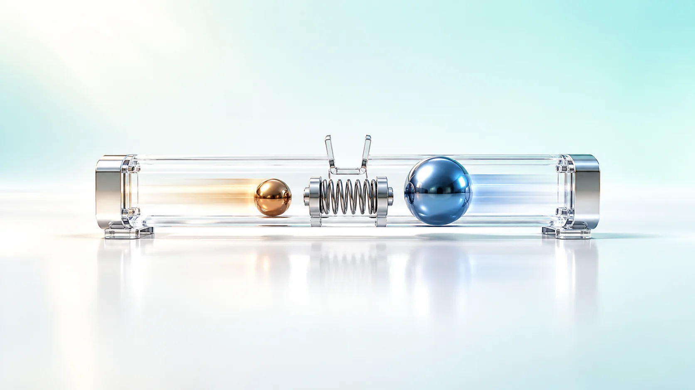
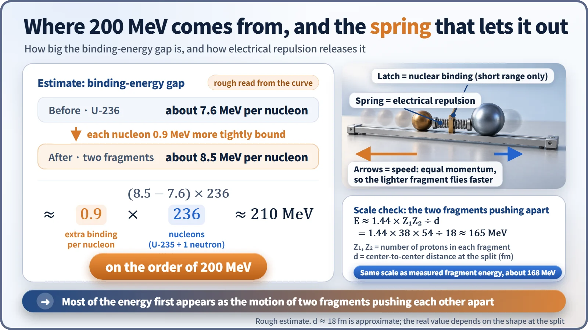
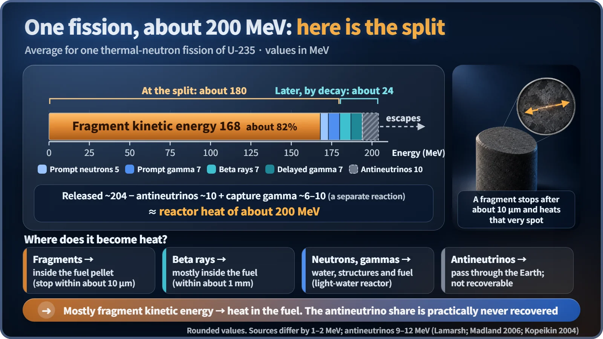

Nuclear Reactions & Fission · 031
A Spring Snapping Loose — What Shape Fission Energy Takes When It Comes Out
Most fission energy first appears as two fragments flying apart, then turns into heat within micrometers of fuel.

Fission releases about 200 MeV, and more than four-fifths of it first appears as the speed of two fragments driven apart by electrical repulsion. That motion turns into ordinary heat within about 10 micrometers of fuel; about 7% arrives later through radioactive decay, and the antineutrino share escapes for good. [1]
Two marbles, one spring and a latch
Picture two marbles on a desk with a spring squeezed tight between them, held together by a tiny latch. As long as the latch holds, nothing happens. The moment it clicks open, the marbles shoot off in opposite directions: the energy stored in the spring has become the marbles' speed.
Energy comes out of nuclear fission in a way that looks remarkably like that scene. Here we follow the famous "about 200 MeV per fission" and ask two questions: what shape does it take when it first appears, and where does it end up?
First, let's balance the 200 MeV books
The starting point is binding energy. Uranium-235 holds each of its nucleons (protons and neutrons) with about 7.6 MeV, while the medium-sized nuclei produced by splitting it are held more tightly, at about 8.5 MeV each. An MeV (mega-electronvolt) is a very small unit of energy used in the atomic world.
That is a gain of about 0.9 MeV per nucleon. A uranium nucleus that has swallowed one neutron contains 236 nucleons, so 0.9 × 236 ≈ 210, on the order of 200 MeV. It is a rough estimate read off a curve, so what matters is that it lands at the right scale. That settles "how much." Now for "how." [2]

The latch is the nuclear force; the spring is electrical repulsion
Two very different forces are locked in a tug-of-war inside a nucleus. The nuclear force grips nucleons tightly but has very short arms: it only reaches immediate neighbors. The electrical repulsion between protons (the Coulomb force) reaches much farther.
A uranium nucleus excited by a captured neutron wobbles like a water droplet, stretches into a peanut shape, and finally the narrow neck snaps. That is the moment the latch opens. The short-armed nuclear force can no longer hold the two lumps together, and the 92 protons, now split into groups of, say, 38 and 54, push each other apart like a released spring.
A rough calculation backs this up. Taking the distance between the two centers at the moment of splitting as about 18 femtometers (a femtometer is a trillionth of a millimeter), the energy of the two charges pushing apart comes to about 165 MeV. The measured kinetic energy of the fragments is about 168 MeV, almost the same. So more than four-fifths of the total first shows up as the speed of two pieces flying apart. [3]
The two pieces are usually different sizes. A common split is a lighter fragment with a mass number around 95 and a heavier one around 139. Because momentum is conserved, the lighter piece flies off faster and carries more of the energy, about 100 MeV. The fragments move at roughly 3 to 5% of the speed of light, more than 10,000 kilometers per second.
Who gets the rest?
Besides the fragments' kinetic energy, energy leaves a fission event by several other routes. On average, per fission of uranium-235 by a thermal neutron:
| Form | When | Energy |
|---|---|---|
| Fragment kinetic energy | At the split | about 168 MeV |
| Kinetic energy of the 2 or 3 prompt neutrons | At the split | about 5 MeV |
| Prompt gamma rays | At the split | about 7 MeV |
| Beta rays from fragment decay | Later | about 7 MeV |
| Delayed gamma rays from fragment decay | Later | about 7 MeV |
| Antineutrinos from fragment decay | Later | about 10 MeV |
References list these values a little differently, by 1 to 2 MeV, and by 9 to 12 MeV for the antineutrinos. The overall picture stays the same: one huge chunk of kinetic energy and a handful of small shares. [4] [5]

Notice that the beta rays and delayed gammas, together about 7%, come out later. This share keeps trickling out even after a reactor is shut down, which is why a stopped reactor still has to be cooled for some time. This is the root of decay heat.
Thrown marbles bury themselves in sand
Fragments flying at tens of millions of kilometers per hour don't get far. A fragment is heavy and strongly charged, so it batters its way through the atoms of the fuel and slows down sharply, stopping after only about 10 micrometers, a fraction of the width of a human hair, like a marble thudding into a sandbox.
The battered atoms vibrate harder, and that vibration is heat. Most fission energy therefore becomes ordinary heat right where it was born, inside the uranium fuel pellet. The center of the fuel is the hottest spot; the heat passes through the cladding into the cooling water and ultimately turns a steam turbine. The neutrons' kinetic energy becomes heat mainly through collisions with water (in a light-water reactor), beta rays are mostly absorbed within about a millimeter of fuel, and gamma rays are absorbed throughout the fuel, structures and coolant. [6]
The guest who always gets away: the antineutrino
One share can't be caught: the antineutrino. It has no electric charge and barely interacts with matter, so it passes straight through the reactor walls and through the entire Earth. About 10 MeV, roughly 5% of the total, disappears this way.
Reactor heat still comes back to about 200 MeV. Neutrons that don't cause fission are captured by other nuclei in the fuel or structures, and that separate reaction releases capture gamma rays worth about 6 to 10 MeV more, which also becomes heat. That is why reactor design uses about 200 MeV of recoverable heat per fission as the standard value, and why producing 1 watt takes about 31 billion fissions every second. [5]
Key takeaways
Fission energy comes from a difference in binding energy, but it first enters the world as the speed of two fragments driven apart by electrical repulsion. That speed becomes heat within a few micrometers of fuel, about 7% arrives later through decay, and the antineutrino share never comes back. A compressed spring, a latch springing open, marbles burying themselves in sand: three scenes that explain why a reactor is, at heart, a machine for making heat.